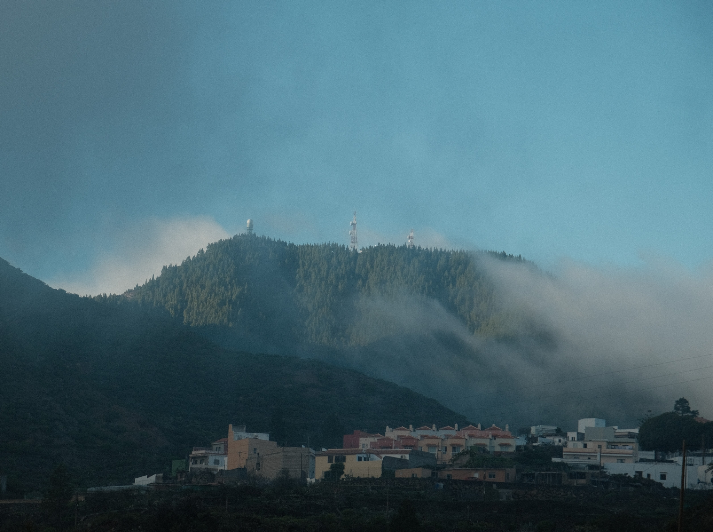
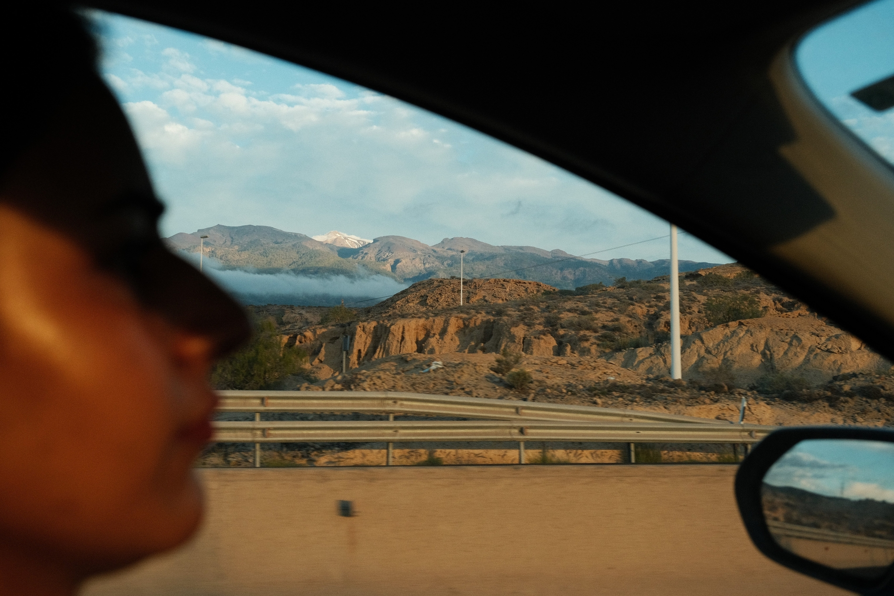
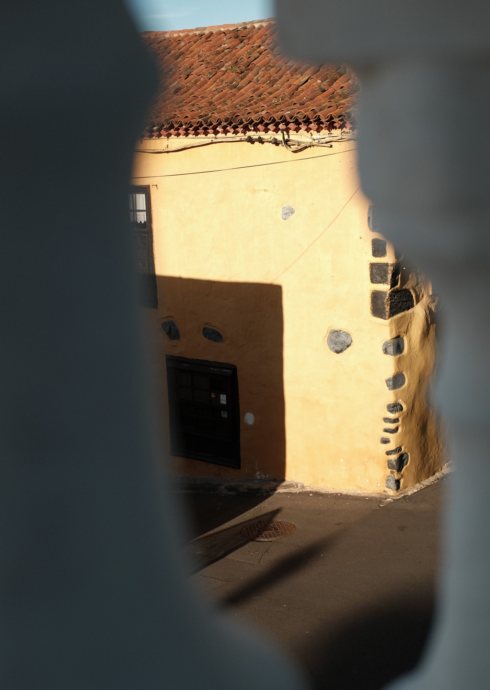
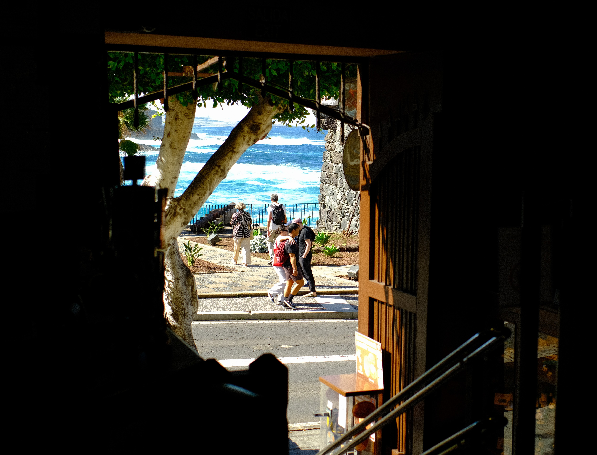
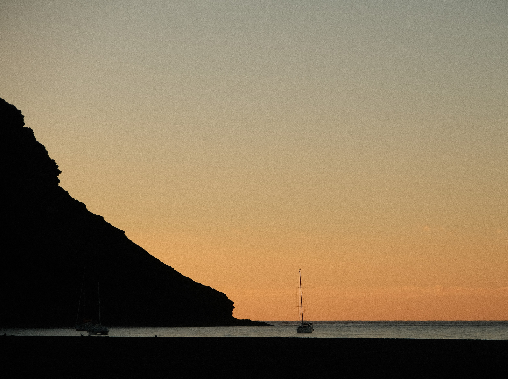
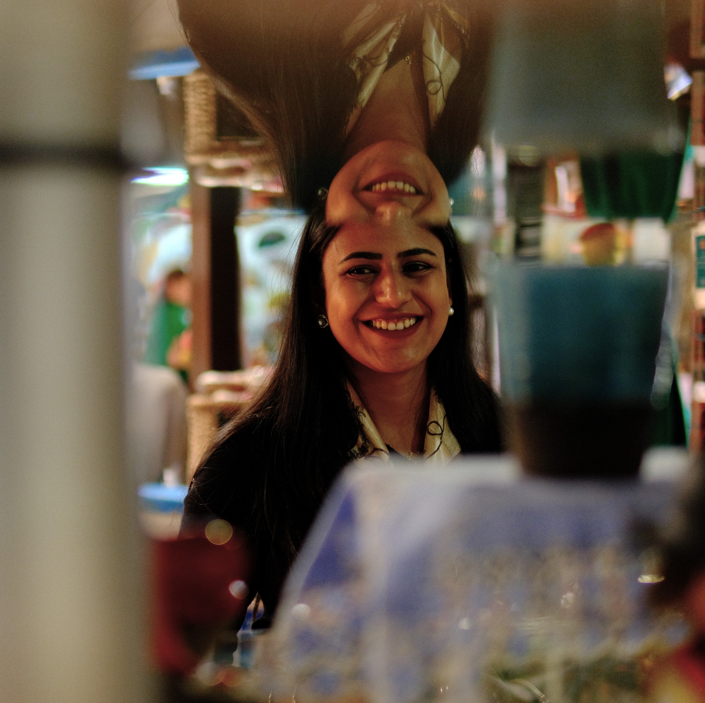

January 2026
Tenerife, Spain
Volcanic terrain and shifting Atlantic light, where small figures move through vast landscapes.






Volcanic terrain and shifting Atlantic light, where small figures move through vast landscapes.





